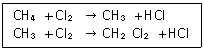

가스기능사 (2005-01-30 기출문제)
1과목: 가스안전관리
1. 다음 아세틸렌 취급방법 중 틀린 것은?
- 저장소는 화기 엄금을 명기한다.
- 가스출구 동결 시 60℃ 이하의 온수로 녹인다.
- 용기는 산소병과 같이 저장하지 않는다.
- 저장소는 통풍이 양호한 구조이어야 한다.
(정답률: 90%)

2. 암모니아를 사용하는 냉동장치의 시운전에 사용해서는 안 되는 기체는?
- 질소
- 산소
- 공기
- 이산화탄소
(정답률: 65%)
3. 액화 산소 취급 시 아세틸렌 혼입은 위험하므로 검출하게 되는데 이 때 사용하는 시약은?
- 이로스 베이시약
- 질산은 시약
- 페놀프탈레인 시약
- 동 암모니아 시약
(정답률: 18%)
4. 배관을 지하에 매설할 때 독성가스 배관은 그 가스가 혼입될 우려가 있는 수도시설과 몇 m 이상의 거리를 유지해야 하는가?
- 100m
- 200m
- 300m
- 400m
(정답률: 59%)
5. 어떤 고압설비의 최고 사용압력이 16㎏/cm2일 때 이 설비의 내압시험 압력은 몇 ㎏/cm2인가?
- 20.8
- 23.8
- 24.0
- 26.0
(정답률: 64%)
6. 가스설비의 수리 시 가연성 가스와 독성가스의 농도기준으로 틀린 것은?
- 수소의 농도를 1%로 유지하였다.
- 아세틸렌의 농도를 1%로 유지하였다.
- 산소가스의 농도를 18~22% 이하로 유지하였다.
- 염소가스의 농도를 1ppm으로 유지하였다.
(정답률: 43%)
7. 다음 중 일반용 고압가스 용기의 도색이 옳은 것은?
- 액화암모니아 - 백색
- 수소 - 회색
- 아세틸렌 - 주황색
- 액화염소 - 황색
(정답률: 62%)
8. 고압가스 충전용기의 운반기준으로 틀린 것은?
- 염소와 아세틸렌, 암모니아 또는 수소는 동일차량에 적재하여 운반하지 아니 할 것
- 가연성가스와 산소를 동일차량에 적재하여 운반하는 때에는 그 충전용기의 밸브가 마주 보도록 할 것
- 가연성가스 또는 산소를 운반하는 차량에는 소화설비 및 재해발생방지를 위한 응급조치에 필요한 자재 및 공구를 휴대할 것
- 충전용기와 소방법이 정하는 위험물과는 동일차량에 적재하여 운반하지 아니 할 것
(정답률: 91%)
9. 다음 폭발의 종류와의 관계가 틀린 것은?
- 화학적 폭발 : 화약의 폭발
- 압력적 폭발 : 보일러의 폭발
- 촉매적 폭발 : C2H2의 폭발
- 중합적 폭발 : HCN의 폭발
(정답률: 63%)
10. LPG 충전소에는 시설의 안전확보상 "충전 중 엔진 정지"를 주위에 보기 쉬운 곳에 설치해야 한다. 이 표지란은?
- 흑색바탕에 백색글씨
- 흑색바탕에 황색글씨
- 백색바탕에 흑색글씨
- 황색바탕에 흑색글씨
(정답률: 71%)
11. 다음 기술 중 적합하지 아니한 것은?
- 단위 질량의 물질의 온도를 1℃ 올리는데 필요한 열량을 현열이라 한다.
- 열의 전달 방법으로는 전열, 대류 및 방사(복사)의 3가지가 있다.
- 임계온도 이상의 온도에서는 어떤 압력을 가하여도 액화는 일어나지 않는다.
- 액체를 일정 압력으로 가열할 경우 비점에 도달하면 액이 모두 증발할 때까지 온도는 일정하다.
(정답률: 43%)
12. 저장 탱크를 지하에 설치하는 기준이 틀린 것은?
- 저장탱크의 주위에 마른 모래를 채울 것
- 저장탱크의 정상부와 지면과의 거리는 40㎝ 이상으로 할 것
- 저장탱크를 2개 이상 인접하여 설치하는 경우에는 상호 간에 1m 이상의 거리를 유지할 것
- 저장탱크를 묻은 곳의 주위에는 지상에 경계를 표시할 것
(정답률: 77%)
13. 다음 가스 중 비중이 공기보다 무거워 바닥에 체류하는 가스로만 된 것은?
- 프로판, 염소, 포스겐
- 프로판, 수소, 아세틸렌
- 염소, 암모니아, 아세틸렌
- 염소, 포스겐, 암모니아
(정답률: 74%)
14. 액화 염소가스의 1일 처리능력이 38,000㎏ 일 때 수용정원이 350명인 공연장과의 안전거리는 얼마로 유지해야 하는가?
- 11m
- 18m
- 23m
- 27m
(정답률: 44%)
15. 도시가스 성분을 분석하였을 때 그 성분이 C3H8 60%[vol], 공기 중 폭발범위 1.8~9.5%, CH4 40%[vol], 공기 중 폭발범위 5~15%와 같을 때 폭발 하한 값으로 옳은 것은?
- 2.4%
- 3.6%
- 4.8%
- 5.5%
(정답률: 36%)
16. 가연성가스 제조시설의 설비와 산소 제조시설의 설비는 몇 m 이상의 거리를 유지해야 하는가?
- 5m
- 10m
- 15m
- 20m
(정답률: 52%)
17. 아세틸렌 제조를 위한 설비에서 폭발사고가 발생하였다. 그 원인과 가장 거리가 먼 것은?
- 동이 포함되어 있다.
- 수은이 포함되어 있다.
- 은이 포함되어 있다.
- 아연이 포함되어 있다.
(정답률: 54%)
18. 도시가스배관의 압력이 중압 배관일 경우 보호판의 두께(㎜)는?
- 3
- 4
- 5
- 6
(정답률: 56%)
19. 액화석유가스 사용시설의 엘피지 용기집합설비의 저장능력이 얼마일 때는 용기, 용기밸브, 압력조정기가 직사광선, 눈 또는 빗물에 노출되지 않도록 해야 하는가?
- 50kg 이하
- 100kg 이하
- 300kg 이하
- 500kg 이하
(정답률: 52%)
20. 포스겐의 취급 사항으로 잘못된 것은?
- 포스겐을 함유한 폐기액은 산성물질로 충분히 처리한 후 처분할 것
- 취급 시에는 반드시 방독마스크를 착용할 것
- 환기시설을 갖출 것
- 누설 시 용기부식의 원인이 되므로 약간의 누설도 주의할 것
(정답률: 75%)
21. 다음 중 LNG의 주성분이 되는 것은?
- CH4
- CO
- C2H4
- C2H2
(정답률: 78%)
22. 상용의 온도에서 사용압력이 12kg/cm2인 고압가스설비가 있다. 고압가스 설비에 사용되는 배관의 재료로서 부적합한 것은?
- KS D 3562 (압력배관용 탄소 강관)
- KS D 3570 (고온 배관용 탄소 강관)
- KS D 3507 (배관용 탄소 강관)
- KS D 3576 (배관용 스테인리스 강관)
(정답률: 65%)
23. 고압가스 특정제조 시설에서 배관을 해저에 설치하는 경우 다음 기준에 적합치 않은 것은?
- 배관은 해저면 밑에 매설할 것.
- 배관은 원칙적으로 다른 배관과 교차하지 아니할 것.
- 배관은 원칙적으로 다른 배관과 수평거리로 20m 이상을 유지할 것.
- 배관의 입상부에는 보호시설물을 설치할 것.
(정답률: 84%)
24. 고압가스용기는 항상 몇 ℃ 이하로 유지관리 하여야 하는가?
- 35℃
- 40℃
- 45℃
- 60℃
(정답률: 84%)
25. 도시가스배관 주위 굴착 시 배관의 좌우 거리는 얼마 이내에서 인력굴착을 해야 하는가?
- 30㎝
- 50㎝
- 1m
- 1m 50㎝
(정답률: 76%)
26. 용기에 산소가 충전되어 있다. 이 용기의 온도가 15℃ 일 때 압력은 150㎏/cm2.g였다. 이 용기가 직사일광을 받아서 용기의 온도가 40℃로 상승하였다면, 이때의 압력은 몇 ㎏/cm2.g가 되겠는가?
- 163 ㎏/cm2.g
- 138 ㎏/cm2.g
- 100 ㎏/cm2.g
- 56 ㎏/cm2.g
(정답률: 51%)
27. 일산화탄소와 반응하여 금속 카아보닐을 생성하는 금속은 어느 것인가?
- 알루미늄(Al)
- 니켈(Ni)
- 아연(Zn)
- 구리(Cu)
(정답률: 44%)
28. 역화 방지 장치를 설치할 곳으로 적당하지 않은 곳은?
- 아세틸렌의 고압 건조기와 충전용 교체밸브사이의 배관
- 가연성가스를 압축하는 압축기와 오토클레이브와의 사이의 배관
- 아세틸렌 충전용지관
- 가연성가스를 압축하는 압축기와 충전용 주관과의 사이
(정답률: 26%)
29. 다음 가스 중 냄새로 쉽게 알 수 있는 것은?
- 프레온가스(R-12), 질소, 이산화탄소
- 일산화탄소, 알곤, 메탄
- 염소, 암모니아, 메탄올
- 아세틸렌, 부탄, 프로판
(정답률: 83%)
30. 가스 저장시설 중 이중각식 구형저장 탱크에 저장하지 않아도 되는 가스는?
- 액체 산소
- 액체 질소
- 액화 에틸렌
- 액화 아세틸렌
(정답률: 16%)
2과목: 가스장치 및 기기
31. 가스미터의 사용공차는 실제 사용되고 있는 상태에서 얼마가 되어야 하는가?
- ± 3%
- ± 4%
- ± 5%
- ± 6%
(정답률: 30%)
32. 다음 중 플랜지 패킹이 아닌 것은?
- 합성수지 패킹
- 석면 패킹
- 금속 패킹
- 모울드 패킹
(정답률: 42%)
33. 공기액화 분리장치의 내부를 세척하고자 한다. 세정액으로 사용할 수 있는 것은?
- 탄산나트륨(Na2CO3)
- 사염화탄소(CCl4)
- 염산(HCl)
- 가성 소다(NaOH)
(정답률: 54%)
34. 도시가스의 측정 사항에 있어서 반드시 측정하지 않아도 되는 것은?
- 농도 측정
- 연소성 측정
- 압력 측정
- 열량 측정
(정답률: 53%)
35. 2000[rpm]으로 회전하는 펌프를 3500[rpm]으로 변환하는 경우 펌프의 유량과 양정은 몇 배가 되는가?
- 유량 : 2.65, 양정 : 4.12
- 유량 : 3.06, 양정 : 1.75
- 유량 : 3.06, 양정 : 5.36
- 유량 : 1.75, 양정 : 3.06
(정답률: 65%)
36. 금속재료의 저온 특성에 관한 다음 기술 중 올바른 것은?
- 오스테나이트 스테인리스강은 어느 온도 이하가 되면 샬피충격치가 급격히 저하, 저온취성을 나타낸다.
- 알루미늄은 저온취성이 현저하므로 저온용 재료로서 부적당하다.
- 탄소강은 저온이 되면 연신율이 떨어진다.
- 탄소강은 저온이 되면 인장강도가 저하한다.
(정답률: 30%)
37. 고온·고압의 가스 배관에 쓰이며 가끔 분해할 수 있는 관의 접합방법은?
- 플랜지 접합
- 나사 접합
- 차입 접합
- 용접 접합
(정답률: 68%)
38. 원심펌프를 병렬연결 운전할 때의 특성으로서 올바른 것은?
- 유량은 불변이다.
- 양정은 증가한다.
- 유량은 감소한다.
- 양정은 일정하다.
(정답률: 58%)
39. 고압가스 설비 중 측정기기 부착 시 주의사항이다. 이중 맞지 않는 것은?
- 압력계 설치 시 반드시 "금유"라고 표기된 전용가스 압력계를 설치해야 한다.
- 온도계 설치 시 감온부의 물리적 변화량을 정확히 측정하는 것을 설치해야 한다.
- 유량계 설치 시 차압식 유량계는 교축부 전후에 압력차가 있는 곳에 설치해야 한다.
- 가스 검지기 설치 시 지면에서 1m 이상의 높이에 설치해야 한다.
(정답률: 61%)
40. 다음 공기 액화 사이클에서 관련이 없는 장치가 연결되어 있는 것은?
- 린데식 공기 액화 사이클 - 액화기
- 클로우드 공기 액화 사이클 - 축냉기
- 필립스 공기 액화 사이클 - 보조 피스톤
- 카피쟈 공기 액화 사이클 - 압축기
(정답률: 25%)
41. LPG의 연소방식 중 모두 연소용 공기를 2차 공기로만 취하는 방식은?
- 적화식
- 분젠식
- 세미분젠식
- 전1차 공기식
(정답률: 64%)
42. 자유 피스톤식 압력계의 피스톤의 직경이 4㎝, 추와 피스톤의 무게가 15.7kg일 때 압력은? (단, π=3.14로 계산한다.)
- 1.25kg/cm2
- 1.57kg/cm2
- 2.5kg/cm2
- 5kg/cm2
(정답률: 40%)
43. 고압가스 제조시설에 안전밸브를 설치하는 곳과의 관계가 잘못된 것은?
- 압축기 토출측
- 감압밸브 앞의 배관
- 반응탑
- 저장탱크
(정답률: 44%)
44. LP가스 이송설비 중 압축기에 의한 이송 방식에서 잘못된 것은?
- 잔가스 회수가 용이하다.
- 베이퍼록 현상이 없다.
- 펌프에 비해 이송시간이 짧다.
- 저온에서 부탄가스가 재액화 되지 않는다.
(정답률: 71%)
45. 다음 기화기에 대한 설명 중 틀린 것은?
- 기화기 사용 시 잇점은 LP가스 종류에 관계없이 한냉 시에도 충분히 기화시킨다.
- 기화 장치의 구성요소 중에는 기화부, 제어부, 조압부 등이 있다.
- 감압가열 방식은 열교환기에 의해 액상의 가스를 기화시킨 후 조정기로 감압시켜 공급하는 방식이다.
- 기화기를 증발형식에 의해 분류하면 순간 증발식과 유입 증발식이 있다.
(정답률: 48%)
3과목: 가스일반
46. 부탄(C4H10)용기에서 액체 580g이 대기 중에 방출 되었다. 표준 상태에서 부피는 몇 ℓ가 되는가?
- 230ℓ
- 150ℓ
- 224ℓ
- 210ℓ
(정답률: 65%)
47. 다음 보기와 같은 반응은 어떤 반응인가?

- 첨가
- 치환
- 중합
- 축합
(정답률: 59%)
48. 압력의 특징을 설명한 것 중 맞는 것은?
- 액두압이란 액화가스 저장탱크 내부의 윗부분 압력이다
- 고압가스법에 표시되는 압력은 절대압력이다.
- 대기압보다 낮은 압력을 절대압력이라 한다.
- 절대압력은 게이지 압력에 대기압을 더한 압력이다.
(정답률: 70%)
49. 다음 아세틸렌가스 발생법 중 대량 생산에 적합한 방식은?
- 투입식 반응
- 고압식 반응
- 주수식 반응
- 축열식 반응
(정답률: 36%)
50. 다음은 암모니아 가스의 특성이다. 옳지 못한 것은?
- 물에 잘 녹는다.
- 4NH3＋3O2 → 2N2＋6H2O
- 산소 중에서 폭발범위는 15~28% 이다.
- 암모니아가 물에 녹으면 알칼리성이 된다.
(정답률: 33%)
51. 표준대기압 하에서 물 1kg을 1℃ 올리는데 필요한 열량의 단위는 어느 것인가?
- kcal
- B.T.U
- C.H.U
- Joule
(정답률: 79%)
52. 화씨온도 104 °F를 섭씨온도로 환산하면 몇 ℃인가?
- 25
- 30
- 35
- 40
(정답률: 61%)
53. 다음의 LPG 성질 중 옳은 것은?
- 공기보다 무겁기 때문에 누설 시 바닥에 고인다.
- 누설되면 공기와 비중이 같으므로 공기와 혼합된다.
- 공기보다 가벼워 누설되면 위로 날아간다.
- 조연성 가스이기 때문에 불이 붙도록 도와준다.
(정답률: 74%)
54. 질소에 관한 설명 중 틀린 것은?
- 고온에서 산소와 반응하여 산화질소가 된다.
- 고온·고압 하에서 수소와 반응하여 암모니아를 생성한다.
- 안정된 가스이므로 Mg, Ca, Li 등의 금속과는 반응하지 않는다.
- 고온에서 탄화칼슘과 반응하여 칼슘시안아미드가 된다.
(정답률: 50%)
55. 다음 중 카바이드와 관련이 없는 성분은?
- 아세틸렌 (C2H2)
- 석회석 (CaCO3)
- 생석회(CaO)
- 염화칼슘(CaCl2)
(정답률: 46%)
56. 다음 중 액비중이 제일 작은 것은?
- 휘발유
- 산소
- 염소
- 프로판
(정답률: 35%)
57. 1[J]은 몇 [cal]의 열량에 해당하는가?
- 0.24
- 2.4
- 4.2
- 42
(정답률: 37%)
58. 다음 가스 중 탄소강 용기에 기체 상태로 충전되어 사용하는 것은?
- 프레온
- 이산화탄소
- 아르곤
- 프로필렌
(정답률: 38%)
59. 다음 중 지연성 가스로만 구성되어 있는 것은?
- CO, H2
- N2, Ar
- 산소, 산화질소
- 석탄가스, 수성가스
(정답률: 47%)
60. 내부에너지를 U, 외부에너지를 W라고 할 때 총 엔탈피 I를 구하는 식으로 옳은 것은?
- I = W-U
- I = U÷W
- I = U＋W
- I = U×W
(정답률: 45%)